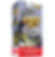

Detox / Cleanses
DR GREENS FIELD KIT
Always ready for action! BC Entities Field Kit includes a 3 oz. liquid sample, bladder bag, adjustable velcro belt, heating pad and temperature strip . BC Entities Fake Pee Field Kit contains Uric Acid. This product is not intended for use on lawfully administered drug tests and is to be used in accordance with all federal and state laws. This product is a Novelty / Fetish Item. This product cannot be shipped or sold to residents of Arkansas, Florida, Georgia, Idaho, Illinois, Indiana, Iowa, Kentucky, Louisiana, Nebraska, New Jersey, North Carolina, North Dakota, Oklahoma, Pennsylvania, Tennessee, Texas, Virginia, Wisconsin, Wyoming. If you live in one of these states and purchase this product - we will not ship it, and you will be charged a 50% charge back processing fee. PRODUCT INFO Always ready for action! BC Entities Field Kit includes a 3 oz. liquid sample, bladder bag, adjustable velcro belt, heating pad and temperature strip . BC Entities Fake Pee Field Kit contains Uric Acid. This product is not intended for use on lawfully administered drug tests and is to be used in accordance with all federal and state laws. RETURN & REFUND POLICY ALL SALES ARE FINAL ! This product is a Novelty / Fetish Item. This product cannot be shipped or sold to residents of Arkansas, Florida, Georgia, Idaho, Illinois, Indiana, Iowa, Kentucky, Louisiana, Nebraska, New Jersey, North Carolina, North Dakota, Oklahoma, Pennsylvania, Tennessee, Texas, Virginia, Wisconsin, Wyoming. If you live in one of these states and purchase this product - we will not ship it, and you will be charged a 50%...
Ask about this product Home